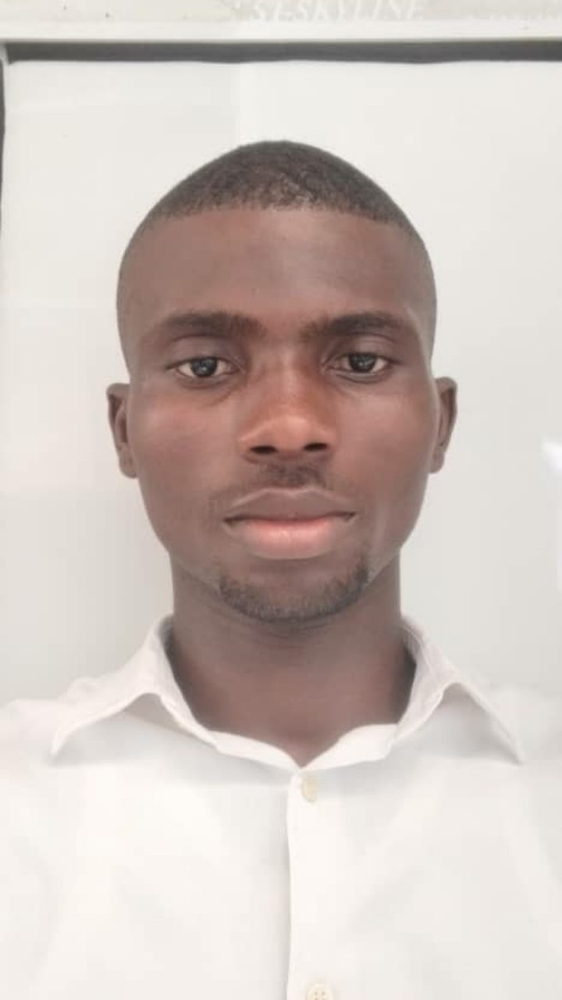
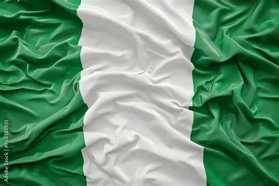

BELLO FAROUQ
About Me

My name is Farouq and i go by Idan. I was born in Nigeria and live with my uncle in Lagos. I am currently working as a Frontend Intern in a tech company
My parents are my world and I love spending time with my friends. I love to travel and also learn new things
Lagos, Nigeria

Nigeria is a country in West Africa and the most populous country in Africa. Its capital is Abuja, while Lagos is its largest city and major economic center. Nigeria gained independence from Britain on October 1st 1960.
The country is rich in natural resources, especially crude oil and natural gas. Nigeria has over 250 ethnic groups, with Hausa, Igbo, and Yoruba among the largest. English is the official language alongside many indigenous languages.